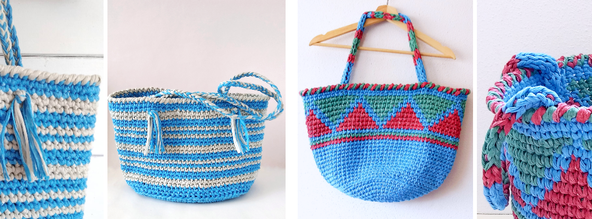
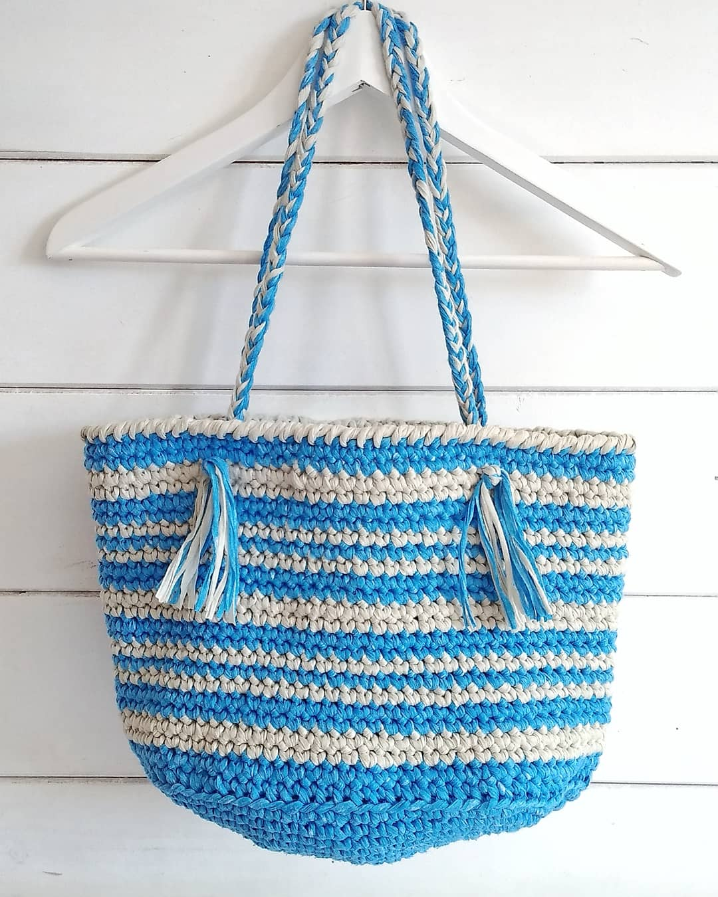

Intercambio ganchillero
¡Hola! Hoy queremos contaros nuestra experiencia participando en nuestro primer intercambio ganchillero y esperamos que os anime a apuntaros a iniciativas de este tipo. Además, os traemos un par de regalitos, si os quedáis hasta el final ;).
 Todo empezó cuando Isa (para quien no lo tenga claro, es la relaciones públicas y la que se entera de todo!) vio el anuncio de un intercambio ganchillero. Cuando me dijo de apuntarnos, yo no sabía ni lo que era, pero cuando me explicó que era como un amigo invisible, pero regalando artículos tejidos a ganchillo, me encantó la idea. El trato consistía en que, cuando se nos asignara una amiga, tendríamos que tejer un bolso para ella y, dentro de un plazo, enviárselo junto con algo de lectura. Entonces, recibiríamos nosotras también un regalo de parte de otra compañera. ¿Cómo no íbamos a apuntarnos?
Y la verdad es que cuando nos llegó la información de nuestras amigas, ¡nos hizo muchísima ilusión! A Isa le tocó regalarle a Maria del Mar, que decía que le gustan el color azul y el mar, y a mí me tocó Beatriz, que le gustan el azul y los colores alegres. Las ganas de verano y vacaciones nos pudieron, y nos fuimos las dos directas a diseñar capazos playeros. Además, le teníamos echado el ojo al hilo Iris de Hilaturas Lm, que Isa había probado para hacerle una camita (¡preciosa!) a Quijote. Nos parecía perfecto para el proyecto, ya que es ligero, a la vez que resistente, así que nos lo compramos y empezamos a tejer. Como resultado, hoy os enseñamos los dos bolsos que mandamos a nuestras respectivas amigas.
Pensando en las indicaciones de Maria del Mar, Isa diseñó un capazo azul con líneas en crudo de base ovalada y con clara inspiración marinera, rematado con asas trenzadas. No podía llamarse de otra manera que bolso Mar.
 Por otro lado, yo me decanté por un capazo azul de base redonda con decoraciones de aire étnico en colores jade y frambuesa, realizadas en tapestry, que he bautizado como bolso Oneida, que significa "la muy esperada".
Por otro lado, yo me decanté por un capazo azul de base redonda con decoraciones de aire étnico en colores jade y frambuesa, realizadas en tapestry, que he bautizado como bolso Oneida, que significa "la muy esperada".
Finalmente, enviamos nuestros paquetes y ya sólo quedaba esperar a que nos llegara la sorpresa…
¡Y mereció la pena la espera! A Isa le llegó un bolso en rosa y azul, en el que Begoña adaptó el patrón del chal cereza de Susimiu, acompañado del libro Patria y un llavero con agujas de ganchillo que nos enamoró (nunca se sabe cuándo vas a necesitar una aguja de emergencia¡!).
A mí me llegó un maravilloso clutch azul en una caja llena de cosas súper bonitas de parte de Maria Jose. Además del bolso y del libro La Isla de Alice, había un collar, chucherías, un ovillo, un planificador semanal, … ¡una fantasía, vamos!
Participar en este intercambio ha sido súper divertido. Tanto el proceso de preparar el regalo con todo nuestro cariño como la ilusión de recibir nuestros paquetes nos ha encantado. Y lo mejor de todo fue ir hablando con nuestras amigas cuando iban llegando los paquetes. Es una oportunidad estupenda para conectar con otras tejedoras de una manera especial. Desde aquí, queremos agradecer una vez más a Meraky Crafts por organizarlo todo. Si os interesa, podéis ver las fotos de todos los regalos bajo el hashtag #swapmerakycrafts.
Además de las vivencias positivas, de esta participación hemos sacado no uno, sino dos patrones que hoy ponemos a vuestra disposición. Podéis encontrar ambos en nuestra página de Ravelry.
Como siempre, nos hará muchísima ilusión que tejas nuestros diseños, así que, si lo haces, no olvides etiquetarnos con los hashtags #bolsoMar, #bolsoOneida y #vidaypunto. Recuerda que puedes contactar con nosotras a través de nuestro correo o por Instagram. También, si quieres estar al tanto de todas nuestras publicaciones, puedes suscribirte a nuestra lista de correo.